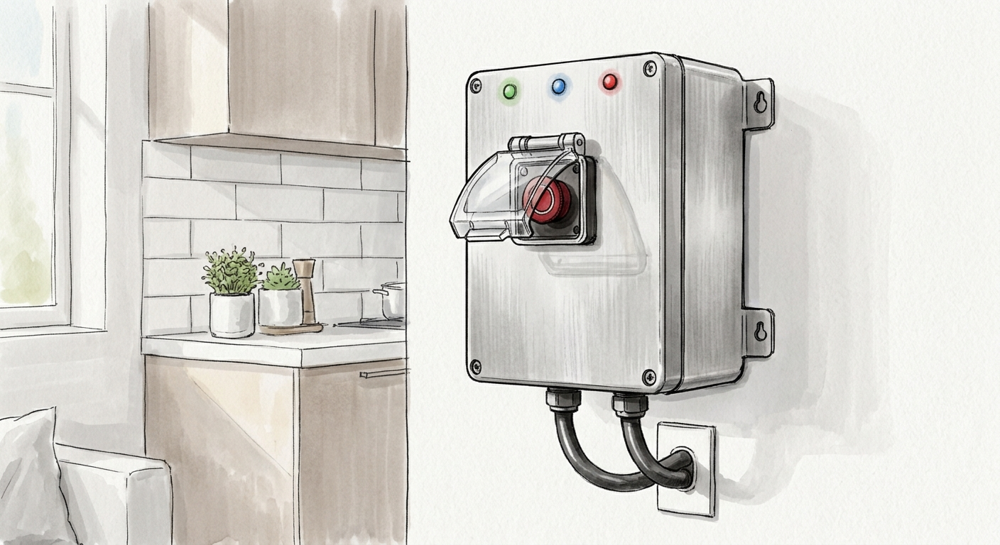
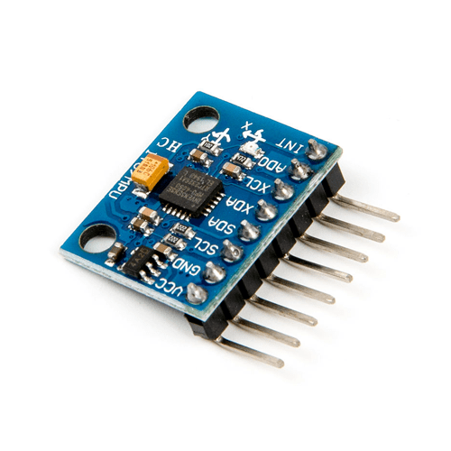
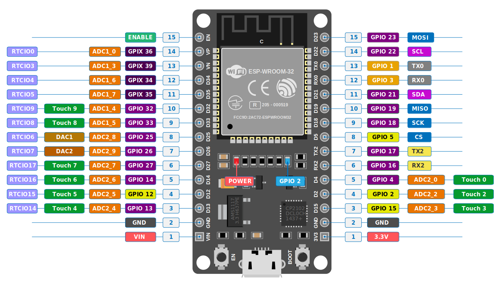
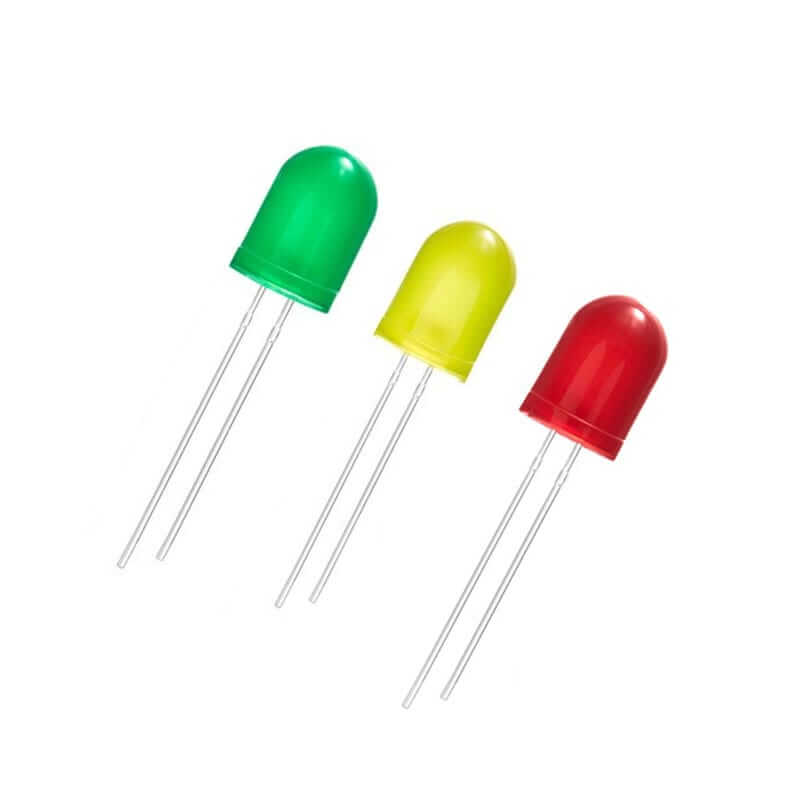
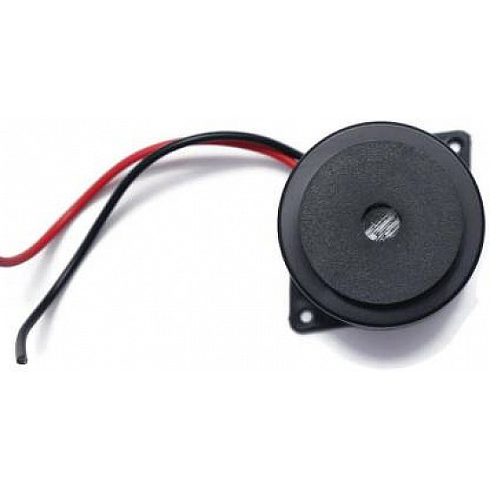

Cuando la tierra se mueve, tu casa se protege sola.
SafeHome detecta sismos fuertes con un sensor de movimiento y corta al instante la electricidad y el gas, para evitar incendios y fugas.

Problemática.
Durante un sismo, las instalaciones de gas, electricidad y agua pueden sufrir daños, provocando fugas, incendios, explosiones e inundaciones. Actualmente, la mayoría de las viviendas dependen de que una persona cierre manualmente los suministros, algo que puede resultar difícil o imposible durante una emergencia.
Nuestro Objetivo.
Desarrollar un sistema de protección sísmica basado en IoT que detecte movimientos sísmicos y alertas tempranas para cortar automáticamente los suministros de gas, electricidad y agua, además de notificar al usuario y permitir el monitoreo y control remoto desde su celular.
1
Detecta
El sensor mide las vibraciones del suelo todo el tiempo.
2
Decide
Si la sacudida supera el límite, el sistema confirma que es un sismo fuerte.
3
Protege
Corta la electricidad y el gas, y activa una alarma sonora.
Kahoot!
Un pequeño quiz para probar tus conocimientos sobre nuestro proyecto.
MPU6050. Mide las vibraciones del suelo para detectar un sismo.
¿Qué hace?
Se colocará en una superficie fija y establepreferentemente en una parte central de la vivienda. Para protegerlo senecesita una CARCASA PROTECTORA, es una cubierta pequeña queprotege el sensor del polvo, humedad y los golpes, ya que necesitadetectar los movimientos de la estructura.
En SafeHome
Envía sus lecturas al microcontrolador. Si la sacudida supera el umbral, se activa el corte de luz y gas.

🧠
Microcontrolador
Es el cerebro del sistema.
¿Qué hace?
Se colocará en el interior de la casa, para protegerlo se ocuparáuna CAJA ESTANCA IP65 sirve para evitar que entre polvo o humedad yelementos del exterior. El ESP32 no necesita recibir luz solar directa yestará cerca de una fuente de alimentación USB.
En SafeHome
Controla el relé, la electroválvula y la alarma con el código en C++ de la sección Lenguaje y código.

🔌
Relé de electricidad
Un interruptor que se activa con una señal pequeña.
¿Qué hace?
Se utilizará una pastilla eléctrica junto con una palanca. Elservomotor estará conectado a la palanca para que, cuando se active laalerta esta baje y se corte la electricidad. Debe de estar fijo, cerrado yseparado de las partes móviles del servomotor, estará en una parteinferior exterior pero elevado del suelo. Para protegerla vamos a ocuparun GABINETE ELÉCTRICO ESTANCO IP65, sirve para proteger la pastilla ysus conexiones contra el agua, la humedad y el polvo, también paraproteger los componentes eléctricos de las condiciones del exterior.
En SafeHome
Corta el paso de electricidad cuando se detecta el sismo. Importante: la corriente de una casa es peligrosa; para la maqueta usa bajo voltaje y pide ayuda a un adulto.
🔥
Electroválvula de gas
Una válvula que se abre o se cierra con electricidad.
¿Qué hace?
Estará conectado directamente a la llave del gas, cuandose active la alerta el servomotor moverá la llave para que directamentecierre el gas. Para proteger la parte eléctrica se va a necesitar unaCUBIERTA PROTECTORA IMPERMEABLE lo va a proteger de salpicaduras,polvo y humedad.
En SafeHome
Se cierra al detectar el sismo para evitar fugas. En una instalación real de gas, el trabajo debe hacerlo un técnico certificado.
Válvula motorizada
Coloca en el interior de la casa cerca de la zona de cocina, se conecta al sistema de control y permite cerrar el paso del gas cuando se detecta una posible fuga. Para protegerlo se ocupará un CUBIERTA PROTECTORA VENTILADA sirve para proteger el sensor del polvo y salpicaduras sin bloquear la entrada de aire que necesita para detectar gases.
🔔
Alarma y LED
Avisan con sonido y luz que el sistema se activó.
¿Qué hace?
El buzzer produce un sonido fuerte y el LED enciende una luz de alerta.
En SafeHome
Se activan al detectar el sismo, para que todos sepan que la luz y el gas ya fueron cortados.

🔊
Batería de respaldo
Da el sonido al sistema en caso de sismo
¿Qué hace?
Almacena energía para alimentar los componentes cuando no hay corriente de la red. El BUZZER se ocupara una CUBIERTA ACÚSTICA IMPERMEABLE esto lo protegera del agua y del polvosin impedir que se escuche la alarma.
En SafeHome
Como SafeHome corta la electricidad de la casa, la batería permite que el sensor, el microcontrolador y la alarma sigan funcionando.

🛠️
Hardware elegido
Punto 4. Los componentes que detectan el sismo, deciden y protegen la casa.
Componentes
ESP32: microcontrolador con Wi-Fi y Bluetooth integrados. Es económico y suficiente para leer el sensor y controlar las salidas.
MPU6050: sensor de movimiento (acelerómetro y giroscopio) que detecta la sacudida del sismo.
2 servomotores: uno mueve la llave del gas y el otro baja la palanca de la pastilla eléctrica.
LED y buzzer: avisan con luz y sonido que hay una alerta.
Protecciones: caja estanca IP65, carcasa para el sensor y cubiertas impermeables.
¿Por qué este hardware?
El ESP32 ya trae Wi-Fi, así que no hace falta un módulo extra. El MPU6050 mide aceleración y giro en un solo chip y se conecta por I2C con solo dos cables. Los servomotores permiten cerrar la llave y bajar la palanca sin modificar la instalación original de la casa.
Sobre la protección IP65
En IP65, el 6 significa que no entra polvo y el 5 que resiste chorros de agua. Por eso la caja del ESP32 y el gabinete de la pastilla eléctrica usan esa clasificación.
Conexión de pines (según el código)
Pin
Componente
Función
GPIO 16 / 17
MPU6050 (SDA / SCL)
Datos y reloj I2C, dirección 0x68
GPIO 13
Servo de gas
90° abierta, 0° cerrada
GPIO 27
Servo de electricidad
90° encendida, 0° cortada
GPIO 19 / 21
LED verde / LED rojo
Modo normal / alarma activa
GPIO 22
Buzzer
Sirena de dos tonos
GPIO 23
LED azul
Indicador de electricidad
GPIO 18
Botón verde
Simula un sismo y rearma el sistema
Alimentación
El ESP32 funciona a 3.3 V lógicos y se alimenta por USB, cerca de una fuente. Los servomotores consumen picos de corriente al moverse, por lo que conviene alimentarlos desde la línea de 5 V y no desde el pin de 3.3 V.
📶
Tipo de conectividad
Punto 5. Funcionamiento de la conectividad del proyecto SafeHome.
Elementos de la conectividad
ESP32 DevKit V1: es el dispositivo que incorpora la conexión Wi-Fi y procesa las lecturas del sensor.
Wi-Fi de 2.4 GHz: permite conectar el ESP32 a una red inalámbrica y comunicarse con el servidor.
HTTP y backend: HTTP permite enviar los eventos del ESP32 al servidor, donde el backend procesa la información.
Base de datos MySQL: almacena los registros de los eventos detectados.
Interfaz web: permite consultar los eventos y visualizar el estado del dispositivo desde una computadora o teléfono.
Tipo de conectividad
El proyecto SafeHome IoT utiliza una conexión Wi-Fi de 2.4 GHz, la cual ya viene integrada en el microcontrolador ESP32. Esto significa que no necesitamos agregar un módulo externo para conectarnos a internet o a una red local.
Elegimos esta tecnología porque permite que el dispositivo transmita información de manera inalámbrica hacia un servidor, sin necesidad de utilizar cables adicionales de comunicación.
Comunicación entre el ESP32 y el servidor
Una vez que el ESP32 se encuentra conectado a la red Wi-Fi, puede comunicarse con nuestro servidor. Cuando el sensor MPU6050 detecta un movimiento que supera el umbral establecido, el ESP32 procesa esa información y genera un evento. Posteriormente, utiliza el protocolo HTTP para enviar ese evento al backend, que es la parte del sistema encargada de recibir y administrar la información.
Es importante entender que Wi-Fi y HTTP cumplen funciones diferentes: Wi-Fi proporciona la conexión inalámbrica, mientras que HTTP permite intercambiar información entre el dispositivo y el servidor.
Almacenamiento de información
Después de que el backend recibe la información enviada por el ESP32, se encarga de procesarla y almacenarla en una base de datos MySQL. Esto permite conservar un historial de los eventos detectados por el dispositivo.
Por ejemplo, si se detecta un posible movimiento sísmico, el sistema puede guardar un registro del evento para que posteriormente pueda ser consultado desde la plataforma web.
Visualización desde la interfaz web
Finalmente, el usuario puede acceder a una interfaz web desde una computadora o un teléfono conectado a la red. Esta interfaz consulta la información del backend y permite visualizar el estado del dispositivo, consultar los eventos registrados y verificar si los mecanismos de protección se encuentran activados.
De esta manera, no es necesario estar físicamente junto al prototipo para consultar la información que está generando.
Conectividad alternativa mediante internet satelital
Como alternativa ante la falta de conexión a internet convencional, el proyecto SafeHome IoT contempla la incorporación de un router con servicio de internet satelital. Este equipo permitirá recibir conexión a internet mediante una señal satelital y distribuirla dentro de la vivienda a través de una red Wi-Fi de 2.4 GHz, a la cual podrá conectarse el ESP32.
De esta manera, el dispositivo podrá mantener la comunicación con el servidor mediante solicitudes HTTP, permitiendo enviar los eventos detectados, almacenarlos en la base de datos MySQL y consultar la información desde la interfaz web. La incorporación de esta alternativa busca ampliar las posibilidades de conectividad del sistema, especialmente en viviendas o zonas donde el acceso a internet convencional sea limitado.
Es importante señalar que las funciones locales de detección y respuesta preventiva del ESP32 deberán mantenerse operativas incluso cuando no exista conexión a internet.
Comparación con otras opciones
Opción
Alcance
Internet
Hardware extra
Wi-Fi
Toda la casa (según el router)
Sí
No
Bluetooth
Unos 10 m
No directo
No
GSM (SIM)
Cobertura celular
Sí
Módulo y plan de datos
📨
Protocolo de comunicación
Punto 6. SafeHome IoT usa el protocolo HTTP con peticiones a rutas definidas.
Introducción
Este apartado describe el protocolo de comunicación del prototipo SafeHome IoT, un sistema domótico de alcance pequeño que, mediante una placa ESP32, detecta movimiento sísmico y ejecuta el cierre de la válvula de gas y la desconexión de la carga eléctrica para reducir riesgos de incendio y explosión.
Para que el sistema funcione, sus cuatro partes (hardware, backend, base de datos y frontend) deben intercambiar información de forma ordenada. El protocolo define cómo se envían los datos, en qué formato y qué método se usa en cada caso. Sin él, el ESP32 registraría eventos que nadie podría consultar, y el dashboard mostraría información que no corresponde a lo que realmente ocurrió.
La solución elegida es el protocolo HTTP con peticiones a rutas definidas, por su sencillez, su compatibilidad con la ESP32 y su facilidad de prueba desde cualquier navegador o herramienta.
Objetivo del protocolo
Permitir que el ESP32 envíe eventos al backend en el momento en que detecta movimiento.
Permitir que el frontend consulte el estado del sistema y el historial de eventos registrados.
Definir un formato común de intercambio (texto plano con pares campo=valor) que todos los componentes entiendan.
Mantener la comunicación simple y verificable, adecuada a un proyecto de alcance pequeño.
Dejar planteado el camino hacia una implementación real y segura (autenticación y HTTPS).
Protocolo utilizado: HTTP
Este protocolo permite que el ESP32 intercambie información con el backend. ¿Por qué HTTP?
La ESP32 cuenta con librerías estándar para hacer peticiones HTTP, por lo que no requiere configuración compleja.
Cada recurso del sistema (los eventos y el estado) tiene su propia ruta dentro del servidor, y los métodos HTTP indican qué se hace con él.
Cada petición es independiente: el servidor no necesita recordar al cliente entre una petición y otra, lo que simplifica el backend.
Las respuestas se pueden probar fácilmente con el navegador, Postman o curl, lo que facilita la depuración durante la demostración.
Métodos HTTP utilizados
Se utilizarán principalmente dos métodos:
Método
Función
POST
El ESP32 envía eventos al backend.
GET
El frontend consulta el estado y los eventos registrados.
POST se usa porque el ESP32 crea un nuevo registro cada vez que detecta movimiento: el evento se agrega al historial y no modifica los anteriores.
GET se usa porque el frontend solo lee información: no altera la base de datos, únicamente solicita el estado actual y la lista de eventos para mostrarlos en pantalla.
Formato de intercambio
Se utilizará texto plano con pares campo=valor (una línea por campo) como formato de intercambio de información, porque es lo más sencillo de generar desde la ESP32 y de leer desde Python.
Ejemplo del cuerpo que el ESP32 envía al backend mediante POST:
Los nombres de los campos coinciden con las columnas de la tabla eventos_sismicos, de modo que el backend puede guardar la información recibida casi directamente, sin transformaciones adicionales.
Ejemplo de funcionamiento
Recorrido completo de un evento, desde la detección hasta su presentación en el dashboard:
1ESP32: detecta movimiento mediante el sensor y genera un evento.
2Petición HTTP POST: el ESP32 envía el evento al backend en formato de texto plano con pares campo=valor a la ruta de eventos.
3Backend (FastAPI): recibe y procesa la información, valida los datos y aplica la lógica del sistema.
4INSERT: el backend guarda el evento en la base de datos MySQL, que almacena el historial.
5Petición HTTP GET: el frontend solicita el estado actual y los eventos registrados a las rutas de consulta.
6Frontend (Vue.js): presenta el estado del sistema y los registros al usuario.
Rutas propuestas
Ruta
Método
Quién lo usa
Función
/eventos
POST
ESP32
Registrar un nuevo evento sísmico.
/eventos
GET
Frontend
Obtener el historial de eventos.
/estado
GET
Frontend
Obtener el estado actual del sistema: gas, electricidad, alarma y sensor.
Con estas tres rutas se cubre todo el funcionamiento del prototipo: una de escritura para el hardware y dos de lectura para la interfaz.
Seguridad de la comunicación
Para una implementación real, la comunicación debe protegerse mediante autenticación y HTTPS.
HTTPS: cifra los datos en tránsito, de modo que la información del hogar no pueda ser leída ni alterada por terceros en la red.
Autenticación: cada petición del ESP32 debe incluir una credencial (por ejemplo, una clave o token) que el backend valide antes de aceptar el evento, evitando registros falsos.
Validación de datos: el backend debe comprobar que los campos recibidos tengan el tipo y los valores esperados antes de guardarlos.
En la etapa de demostración estas medidas pueden quedar planteadas sin implementar, pero deben mencionarse como requisito para llevar el prototipo a un entorno real.
Alcance y limitaciones
El protocolo se limita a HTTP y a tres rutas; no se implementan WebSockets ni mensajería en tiempo real.
La actualización del dashboard es periódica (consultas GET cada pocos segundos), no instantánea.
La comunicación opera en una red local o entorno de pruebas; no está expuesta a internet.
Los estados de gas y electricidad son simulados: el protocolo transporta información del prototipo, no controla instalaciones reales.
Trabajo futuro: autenticación por token, HTTPS, notificaciones push y soporte para varios dispositivos por hogar.
En resumen
El protocolo de comunicación es la columna vertebral de SafeHome IoT: define cómo el ESP32 reporta un sismo, cómo el backend lo procesa y almacena, y cómo el frontend lo presenta al usuario. Al apoyarse en HTTP, en dos métodos claros (POST y GET) y en el texto plano con pares campo=valor como formato común, el sistema mantiene una comunicación simple, verificable y fácil de ampliar, sin perder de vista la seguridad que exigiría una implementación real.
Lenguaje y código
El cerebro de SafeHome está programado en C++ (Arduino). Esta página web usa HTML, CSS y JavaScript.
Librerías
ESP32ServoControla los dos servomotores: la toma de gas y el interruptor de electricidad. Es la que aparece en libraries.txt.
WireComunicación I2C con el sensor MPU6050. Ya viene incluida con el ESP32, no hay que instalarla.
Cómo funciona el código
Caracteristicas
Lenguaje compilado: El código fuente se procesa mediante un compilador para transformarse en código de máquina ejecutable por el microcontrolador antes de su carga.
Control de pines GPIO: Permite la gestión directa de los pines de entrada y salida de propósito general de la tarjeta.
Lectura de sensores: Facilita la adquisición y procesamiento de datos provenientes de diversos sensores externos.
Control de actuadores: Permite accionar elementos de salida físicos, tales como motores o sistemas de respuesta.
Conectividad integrada: Cuenta con bibliotecas especializadas para la gestión de comunicación mediante Wi-Fi y protocolos HTTP.
Compatibilidad nativa: Diseñado para aprovechar al máximo la arquitectura y los recursos de hardware del ESP32.
Función Principal
WiFi.h: Establece y gestiona la conexión del ESP32 a la red inalábrica (Wi-Fi).
Wire.h: Habilita la comunicación mediante el protocolo I2C, utilizada específicamente para la integración del sensor MPU6050.
ESP32Servo: Permite el control preciso de la posición y el movimiento de un servomotor.
HTTPClient.h: Gestiona las peticiones y el envío de información recopilada hacia el backend o servidor remoto.
sketch.inoCódigo del proyecto · ESP32 + MPU6050
// =============================================================================
// SAFEHOME IoT - Sistema de protección sísmica con ESP32 + MPU6050
// =============================================================================
// ¿QUÉ HACE?
// 1. El sensor MPU6050 vigila continuamente si hay vibración (sismo).
// 2. Al DETECTAR un sismo:
// - Suena la bocina (sirena de dos tonos).
// - Se enciende el LED rojo y se apaga el verde.
// - El servo de la TOMA DE GAS gira a 0° -> válvula CERRADA.
// - El servo del INTERRUPTOR GENERAL gira a 0° -> electricidad CORTADA.
// - Se apaga el LED azul (indicador de electricidad / ventilador).
// 3. Cuando el movimiento TERMINA (TIEMPO_CALMA sin vibración) el sistema
// vuelve solo a modo normal: gas y electricidad se reconectan.
// 4. El botón verde sirve para SIMULAR un sismo y, si se presiona durante
// la alarma, para rearmar el sistema manualmente.
//
// ELEMENTOS MÓVILES (se ven en el simulador):
// - Servo "servo" = toma de gas (90° abierta / 0° cerrada)
// - Servo "servoLuz" = interruptor general de electricidad (90° ON / 0° OFF)
// Ambos se mueven poco a poco (no de golpe) para que el movimiento se aprecie.
//
// LIBRERÍAS: ESP32Servo (archivo libraries.txt)
// =============================================================================
#include <Wire.h> // Comunicación I2C con el MPU6050
#include <ESP32Servo.h> // Control de los servomotores
// ---------------------------- PINES ------------------------------------------
#define BTN 18 // Botón verde: simula sismo / rearma el sistema
#define LED_GREEN 19 // LED verde: sistema en modo normal
#define LED_RED 21 // LED rojo: alarma sísmica activa
#define BUZZER 22 // Bocina (sirena)
#define FAN 23 // LED azul: electricidad / ventilador (ON en normal)
#define SERVO_PIN 13 // Servo de la toma de gas
#define SERVO_LUZ_PIN 27 // Servo del interruptor general de electricidad
// El I2C normal del ESP32 usa los pines 21 y 22, pero en este proyecto ya los
// ocupan el LED rojo y la bocina. Por eso el MPU6050 se conecta a otros pines.
#define PIN_SDA 16 // MPU6050 - datos
#define PIN_SCL 17 // MPU6050 - reloj
// ---------------------------- MPU6050 ----------------------------------------
const int MPU_ADDR = 0x68; // Dirección I2C del sensor (AD0 sin conectar)
// ---------------------------- AJUSTES (puedes cambiarlos) --------------------
// Detección de sismo
const float UMBRAL_ACEL = 0.20; // Cambio de aceleración (en g) que cuenta como movimiento fuerte
const float UMBRAL_GIRO = 20.0; // Velocidad de giro (en °/s) que cuenta como movimiento fuerte
const int MOVIMIENTOS_PARA_ALARMA = 3; // Movimientos fuertes necesarios para confirmar sismo (1 = cualquier golpe)
const unsigned long VENTANA_CONFIRMACION = 2000; // ms en los que deben ocurrir esos movimientos
const unsigned long TIEMPO_CALMA = 5000; // ms SIN movimiento para dar el sismo por terminado
const unsigned long INTERVALO_LECTURA = 50; // ms entre lecturas del sensor
// Servos
const int ANGULO_ABIERTO = 90; // Gas abierto / electricidad encendida
const int ANGULO_CERRADO = 0; // Gas cerrado / electricidad cortada
const unsigned long VELOCIDAD_SERVO_MS = 10; // ms por grado (10 ms -> 90° en ~0.9 s)
// Sirena
const int TONO_ALTO = 1400; // Hz
const int TONO_BAJO = 900; // Hz
const unsigned long CAMBIO_TONO_MS = 300; // ms entre cambio de tono
const int CANAL_BUZZER = 6; // Canal PWM propio para la bocina (evita chocar con los servos)
// Sismo simulado (botón)
const unsigned long DURACION_SISMO_SIM = 8000; // ms que dura el sismo simulado
// ---------------------------- VARIABLES DE ESTADO ----------------------------
Servo gasServo; // Servo de la toma de gas
Servo luzServo; // Servo del interruptor de electricidad
bool alarmActive = false; // true mientras dura la alarma sísmica
int lastButton = HIGH; // Estado anterior del botón (para detectar el clic)
unsigned long ultimoBoton = 0; // Anti-rebote del botón
// Posición actual y destino de cada servo (para moverlos suavemente)
int posGas = ANGULO_ABIERTO, objetivoGas = ANGULO_ABIERTO;
int posLuz = ANGULO_ABIERTO, objetivoLuz = ANGULO_ABIERTO;
// Detección de movimiento
float axPrev = 0, ayPrev = 0, azPrev = 0; // Lectura anterior del acelerómetro
bool primeraLectura = true;
int movimientosRecientes = 0; // Cuántos movimientos fuertes van en la ventana
unsigned long inicioVentana = 0; // Cuándo empezó la ventana de confirmación
unsigned long ultimoMovimiento = 0; // Cuándo fue el último movimiento fuerte
unsigned long ultimaLectura = 0;
// Sirena
bool tonoAlto = false;
unsigned long ultimoTono = 0;
// Simulador de sismo
bool simActiva = false;
unsigned long simInicio = 0;
// =============================================================================
// BOCINA (sirena)
// =============================================================================
// Prepara la bocina en un canal PWM independiente de los servos.
// (El #if hace que funcione con las versiones 2.x y 3.x del core de ESP32)
void iniciarBuzzer() {
#if defined(ESP_ARDUINO_VERSION_MAJOR) && ESP_ARDUINO_VERSION_MAJOR >= 3
ledcAttachChannel(BUZZER, 2000, 8, CANAL_BUZZER);
#else
ledcSetup(CANAL_BUZZER, 2000, 8);
ledcAttachPin(BUZZER, CANAL_BUZZER);
#endif
}
// Hace sonar la bocina a la frecuencia indicada (0 = silencio)
void sonar(int frecuencia) {
#if defined(ESP_ARDUINO_VERSION_MAJOR) && ESP_ARDUINO_VERSION_MAJOR >= 3
ledcWriteTone(BUZZER, frecuencia);
#else
ledcWriteTone(CANAL_BUZZER, frecuencia);
#endif
}
// Alterna entre dos tonos mientras la alarma esté activa (efecto de sirena)
void actualizarSirena(unsigned long ahora) {
if (!alarmActive) return;
if (ahora - ultimoTono >= CAMBIO_TONO_MS) {
ultimoTono = ahora;
tonoAlto = !tonoAlto;
sonar(tonoAlto ? TONO_ALTO : TONO_BAJO);
}
}
// =============================================================================
// SERVOS (toma de gas e interruptor de electricidad)
// =============================================================================
// Mueve cada servo UN grado hacia su destino cada VELOCIDAD_SERVO_MS.
// Así el giro es gradual y se aprecia en el simulador, y el programa no se
// queda "congelado" mientras los servos se mueven.
void actualizarServos(unsigned long ahora) {
static unsigned long ultimoPaso = 0;
if (ahora - ultimoPaso < VELOCIDAD_SERVO_MS) return;
ultimoPaso = ahora;
if (posGas != objetivoGas) {
posGas += (objetivoGas > posGas) ? 1 : -1;
gasServo.write(posGas);
}
if (posLuz != objetivoLuz) {
posLuz += (objetivoLuz > posLuz) ? 1 : -1;
luzServo.write(posLuz);
}
}
// =============================================================================
// SENSOR MPU6050
// =============================================================================
// Lee dos bytes del sensor y los une en un número de 16 bits con signo
int16_t leer16() {
int16_t alto = Wire.read();
int16_t bajo = Wire.read();
return (alto << 8) | bajo;
}
// Lee aceleración (en g) y giroscopio (en °/s) del MPU6050
void leerMPU(float &ax, float &ay, float &az, float &gx, float &gy, float &gz) {
Wire.beginTransmission(MPU_ADDR);
Wire.write(0x3B); // Primer registro del acelerómetro
Wire.endTransmission(false);
Wire.requestFrom(MPU_ADDR, 14, true);
int16_t rax = leer16();
int16_t ray = leer16();
int16_t raz = leer16();
leer16(); // Temperatura (se ignora)
int16_t rgx = leer16();
int16_t rgy = leer16();
int16_t rgz = leer16();
ax = rax / 16384.0; // Rango ±2 g
ay = ray / 16384.0;
az = raz / 16384.0;
gx = rgx / 131.0; // Rango ±250 °/s
gy = rgy / 131.0;
gz = rgz / 131.0;
}
// =============================================================================
// SIMULADOR DE SISMO (botón)
// =============================================================================
// Arranca un sismo artificial: durante unos segundos se le suma una vibración
// a las lecturas del acelerómetro. Así el sismo pasa por el mismo camino que
// uno real: sensor -> detección -> alarma -> corte de servicios -> reconexión.
void iniciarSismoSimulado(unsigned long ahora) {
simActiva = true;
simInicio = ahora;
Serial.println("[SIMULATOR] Simulated earthquake started");
}
// Agrega la vibración artificial a la lectura del sensor mientras dure el sismo
void inyectarSismoSimulado(float &ax, float &ay, float &az, unsigned long ahora) {
if (!simActiva) return;
float t = (float)(ahora - simInicio); // ms desde que empezó el sismo
if (t > DURACION_SISMO_SIM) {
simActiva = false;
Serial.println("[SIMULATOR] Simulated earthquake finished");
return;
}
// Envolvente: la intensidad sube durante 1 s y baja durante los últimos 1.5 s
float subida = fminf(1.0, t / 1000.0);
float bajada = fminf(1.0, (DURACION_SISMO_SIM - t) / 1500.0);
float env = subida * bajada;
float s = t / 1000.0;
// Tres vibraciones (ejes X, Y, Z) con frecuencias distintas, como un temblor real
ax += 0.60 * env * sin(2 * PI * 3.0 * s);
ay += 0.40 * env * sin(2 * PI * 4.3 * s + 1.0);
az += 0.15 * env * sin(2 * PI * 5.0 * s);
}
// =============================================================================
// MODOS DE OPERACIÓN
// =============================================================================
// MODO NORMAL: todo en orden, gas abierto y electricidad encendida
void normalMode() {
alarmActive = false;
movimientosRecientes = 0;
digitalWrite(LED_GREEN, HIGH); // Verde = todo bien
digitalWrite(LED_RED, LOW);
digitalWrite(FAN, HIGH); // Azul = hay electricidad
sonar(0); // Bocina en silencio
objetivoGas = ANGULO_ABIERTO; // Los servos se abren gradualmente
objetivoLuz = ANGULO_ABIERTO;
Serial.println("SYSTEM NORMAL");
Serial.println("GAS: OPEN (SIMULATED)");
Serial.println("ELECTRICITY: ON (SIMULATED)");
}
// MODO ALARMA: sismo detectado -> sirena y corte de gas y electricidad
void earthquakeDetected() {
alarmActive = true;
movimientosRecientes = 0;
ultimoTono = 0; // Fuerza que la sirena arranque de inmediato
digitalWrite(LED_GREEN, LOW);
digitalWrite(LED_RED, HIGH); // Rojo = alarma
digitalWrite(FAN, LOW); // Azul apagado = sin electricidad
objetivoGas = ANGULO_CERRADO; // Los servos se cierran gradualmente
objetivoLuz = ANGULO_CERRADO;
Serial.println("EARTHQUAKE ALERT!");
Serial.println("GAS: CLOSED (SIMULATED)");
Serial.println("ELECTRICITY: OFF (SIMULATED)");
}
// =============================================================================
// BOTÓN
// =============================================================================
// Un clic simula un sismo. Si ya hay alarma, el clic rearma el sistema a mano.
void revisarBoton(unsigned long ahora) {
int button = digitalRead(BTN);
// Detecta el instante en que se presiona (de HIGH a LOW) con anti-rebote
if (button == LOW && lastButton == HIGH && ahora - ultimoBoton > 200) {
ultimoBoton = ahora;
if (!alarmActive && !simActiva) {
iniciarSismoSimulado(ahora); // Empieza el sismo artificial
} else {
simActiva = false; // Cancela el sismo artificial
normalMode(); // Rearme manual
}
}
lastButton = button;
}
// =============================================================================
// SETUP: se ejecuta una sola vez al encender
// =============================================================================
void setup() {
Serial.begin(115200);
// Entradas y salidas
pinMode(BTN, INPUT_PULLUP); // Botón con resistencia interna (LOW = presionado)
pinMode(LED_GREEN, OUTPUT);
pinMode(LED_RED, OUTPUT);
pinMode(FAN, OUTPUT);
iniciarBuzzer();
// Servos: periodo de 50 Hz y arrancan en posición "abierto / encendido"
gasServo.setPeriodHertz(50);
luzServo.setPeriodHertz(50);
gasServo.attach(SERVO_PIN);
luzServo.attach(SERVO_LUZ_PIN);
gasServo.write(posGas);
luzServo.write(posLuz);
// Comunicación con el MPU6050
Wire.begin(PIN_SDA, PIN_SCL);
// Despertar el MPU6050 (sale en modo "sleep" por defecto)
Wire.beginTransmission(MPU_ADDR);
Wire.write(0x6B); // Registro de energía
Wire.write(0x00); // 0 = sensor despierto
Wire.endTransmission(true);
normalMode();
Serial.println("SAFEHOME IoT READY");
Serial.println("Move the MPU6050 sliders quickly or press the button to simulate an earthquake");
}
// =============================================================================
// LOOP: se repite todo el tiempo
// =============================================================================
void loop() {
unsigned long ahora = millis();
revisarBoton(ahora);
// --- 1) Leer el sensor cada INTERVALO_LECTURA ---
if (ahora - ultimaLectura >= INTERVALO_LECTURA) {
ultimaLectura = ahora;
float ax, ay, az, gx, gy, gz;
leerMPU(ax, ay, az, gx, gy, gz);
inyectarSismoSimulado(ax, ay, az, ahora); // Solo hace algo si se pulsó el botón
if (!primeraLectura) {
// Cuánto cambió la aceleración respecto a la lectura anterior
float dAcel = sqrt(sq(ax - axPrev) + sq(ay - ayPrev) + sq(az - azPrev));
// Qué tan rápido está girando el sensor
float giro = sqrt(sq(gx) + sq(gy) + sq(gz));
// --- 2) ¿Hay un movimiento fuerte? ---
if (dAcel > UMBRAL_ACEL || giro > UMBRAL_GIRO) {
ultimoMovimiento = ahora; // Mientras haya movimiento, el sismo "sigue"
if (!alarmActive) {
// Para evitar falsas alarmas por un golpe aislado, se piden varios
// movimientos fuertes dentro de una ventana de tiempo.
if (movimientosRecientes == 0 || ahora - inicioVentana > VENTANA_CONFIRMACION) {
inicioVentana = ahora;
movimientosRecientes = 0;
}
movimientosRecientes++;
// --- 3) Sismo confirmado: activar alarma y cortar servicios ---
if (movimientosRecientes >= MOVIMIENTOS_PARA_ALARMA) {
earthquakeDetected();
}
}
}
}
// Guardar la lectura actual para compararla con la siguiente
axPrev = ax; ayPrev = ay; azPrev = az;
primeraLectura = false;
}
// --- 4) Reconexión automática: pasó el tiempo de calma sin movimiento ---
if (alarmActive && (ahora - ultimoMovimiento > TIEMPO_CALMA)) {
Serial.println("MOVEMENT STOPPED - AUTO RESTORE");
normalMode();
}
// --- 5) Mover servos y sirena (se actualizan en cada vuelta del loop) ---
actualizarServos(ahora);
actualizarSirena(ahora);
delay(1); // Pequeña pausa: acelera la simulación en Wokwi
}